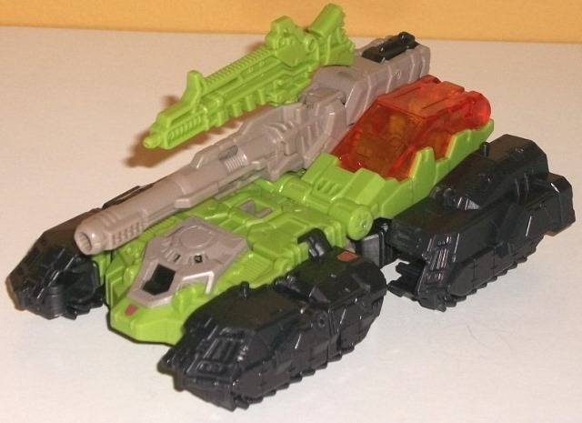

Allegiances
: Autobot
Size
: Deluxe
Difficulty of Transformation
: Medium
Color Scheme
: Charcoal black, pale
grayish brown, moderately pale green, and some transparent orange, pale
yellow, silver, red, and blue
Rating
: 7.7
Furos is the new copyright-friendly
name for Duros, Hardhead's Headmaster's name in G1. In Titan Master mode,
Furos has fairly square, boxy details that makes him fit in with the traditional
G1 aesthetic, along with a well-detailed little head with little blue dots
for eyes and a nice yellow face. The moderately pale green and grayish
brown on the rest of him go together fairly well-- certainly for a guy
who forms the head of a military vehicle-- but I wish the brown was a bit
more "brown" and less pale. It would've made for better contrast. Like
other Titan Masters, Furos has limited ball joint movement at the neck
and elbows, and back-and-forth movement at the hips and knees (as one;
both legs are pinned together). In head mode, the head more looks like
Hardhead's toy version, with a visor and grooved mask. Again, the blue
visor and yellow faceplate look pretty nice together, along with the brown
on the rest of the front of the head.

Hardhead's vehicle mode
is very much like his G1 toy, being best described as some kind of futuristic
asymmetrical tank. He's got four sets of treads (the treads don't move,
there's little transparent wheels on the underside), a cannon on the right
side, and a cockpit on the left. A Titan Master figure can sit in both
the cockpit as well as a fold-out portion at the rear of the cannon. Additionally,
there's a little bump on the top of each of the four treads that will peg
into the bottom of a Titan Master's foot, so you can have up to four additional
little guys standing on this mode. There aren't any robot mode extras in
this mode perse, but it's a pretty Cybertronian "fake" vehicle mode, and
I don't like how the treads on the sides don't connect, and how the cannon
can't slide over to a central position on the top-- it can't even rotate
much side-to-side because it knocks into the side of the cockpit (though
it can move up and down). Thus, my issue with the vehicle mode has more
to do with a few "lazy" issues that make an excuse for stuff like his treads
not connecting by just saying it's an alien vehicle. The color scheme of
pale green, brown, and charcoal black is a nice military scheme, but each
color I feel could be a bit more "bold" to add some contrast-- the brown
in particular, though I think the black would've looked a bit better as
a "solid" black compared to a charcoally color as well. The transparent
orange is a VERY nice shade, though, and contrasts in addition to being
bold enough to catch the eye. The mold detailing is one of the highlights
of this mode, with a lot of excellent detailing from the faux brown-and-black
"port" at the front to all the little vents and panels on most of the figure
to the intricately detailed treads. I do wish he had a bit more paint,
though, with almost all of the paint in this mode near the center front.
There's no paint on the treads beyond Autobot symbols, none on the cannon,
none on his gun accessory (which is plugged into the top of the cannon
in this mode)-- it's a real shame especially for the treads, given how
much mold detailing there is.
Hardhead's robot mode
is fairly predictable when looking at his vehicle mode-- the four treads
become his appendages, while the main body folds in on itself with the
cannon coming over the shoulder. I do think the lower arms are a bit oddly
proportioned because of the treads on the bottom with the fists folding
a little bit too far out. The bottom of the cockpit on the back also sticks
out from the side of the abs a bit, though this is a more minor issue.
Otherwise, Hardhead is quite well-proportioned, with some nice thick shoulders
and a somewhat wide chest, which is certainly fitting for a tank-bot. The
head still blocks cannon movement some, but the cannon stil can move side-to-side
more than in vehicle mode-- and I do love the cannon at the side, it's
a nice unique feature for Hardhead. Unfortunately beyond the head, there's
not much more paint in this mode-- all the new paint is just on his pelvis,
where admittedly there's a nice mix of silver, red, and pale yellow there
to add a bit more color to the toy. However, his arms and legs REALLY need
some more paint, especially considering they're almost all charcoal black.
At least the chest, head, and pelvis area looks pretty good in terms of
color breakup. Hardhead's articulation is quite good-- he can move at the
neck, shoulders (at two points), elbows (at three points), wrists (at two
points), hips (at two points), and knees. His feet are fairly stable, though
heels would've helped just a bit more-- but he still can pull off a lot
of excellent poses, lack of waist rotation aside.
Titans Return Hardhead
has an excellently proportioned robot mode, great articulation, and a fitting
(though not amazing) color scheme, but he has two fairly major downsides
for me-- one is some of the aforementioned "lazy" aspects of his Cybertronian
mode like the four treads, and the other is a pretty significant lack of
paint. I also wish his modes were a bit more obviously different. He's
still a pretty decent mold and a very accurate update of his G1 design,
but he's a little below-average as far as the line's deluxes go.
Review by Beastbot